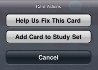

Thank you for upgrading! Now that you are not using 1.0, we need to update the dictionary.
Press "Start Download" to begin updating.
You'll need a network connection for the download. We strongly recommend using a WiFi connection. You can get the update via your mobile network (3G), however it takes a while due to download speed limits.
Press Cancel if you want to do this later.
In the meantime, you can keep using the app with existing data. When you're ready, go to Settings and press the Update button on the top right.
That's a great question. Since you are Awesome - after all you purchased Japanese Flash - we'll share our master plan.
We have separated the data files (dictionary search, example sentences, etc) into downloadable updates to make it easier to deliver new data as it changes.
We all know language changes - so your iPhone study application needs to change with it. So if we receive reports of errors in the dictionary, we will be able to roll out changes to everyone automatically, without re-installing the application. Cool, right?
That platform isn't quite ready yet - but we are working on it - and this change was a key step along the way.
When studying, swipe the card to see example sentences. Not every card has sentences, although there are 50,000+ sentences covering 17,000+ cards. You'll need to download the example sentences update. Tap Settings > Updates and tap to download & install the example sentences after this update.
Some users said cards they know are shown too frequently. Other users told us that somewhat-known cards don't appear often enough! We want everyone to be happy. Tap Settings > Difficulty to adjust the difficulty to suit you.
We've improved the quality of the dictionary, removed some duplicates and added about 2,000 new entries.
Best of all, we've turned the editorial control over to you!
The Add To Set button on the practice
screen is now titled Action, and it does two things:

Help Us Fix This Card: Find something wrong? Tell us - we'll incorporate the changes and push it back out to all Japanese Flash users.
Add To Card Set: Allows you to add or remove the current card to and from different study sets (same behavior as 1.0).
By creating a system of updates, Japanese Flash app is now small enough to download "over the air" on a 3G network. Now anyone can download Japanese Flash anywhere, anytime! Spread the word!
Okay, so it's not really a feature - but if you want to take a break from studying, check out Settings > Follow Us. You can follow us on Twitter or join us on Facebook. We'll let you know in advance what's going it into the next version!